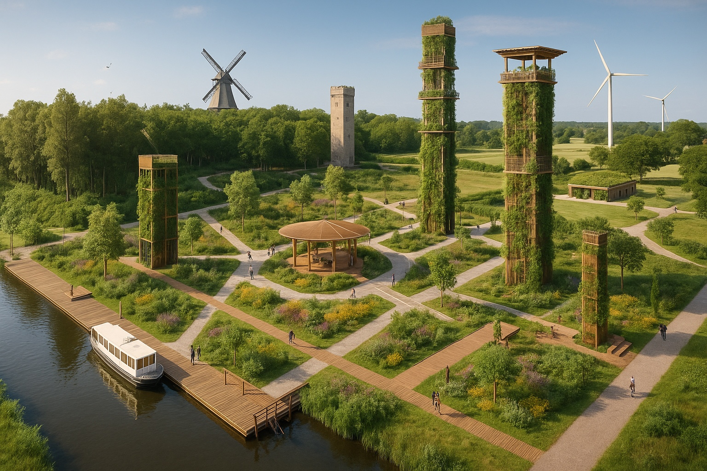
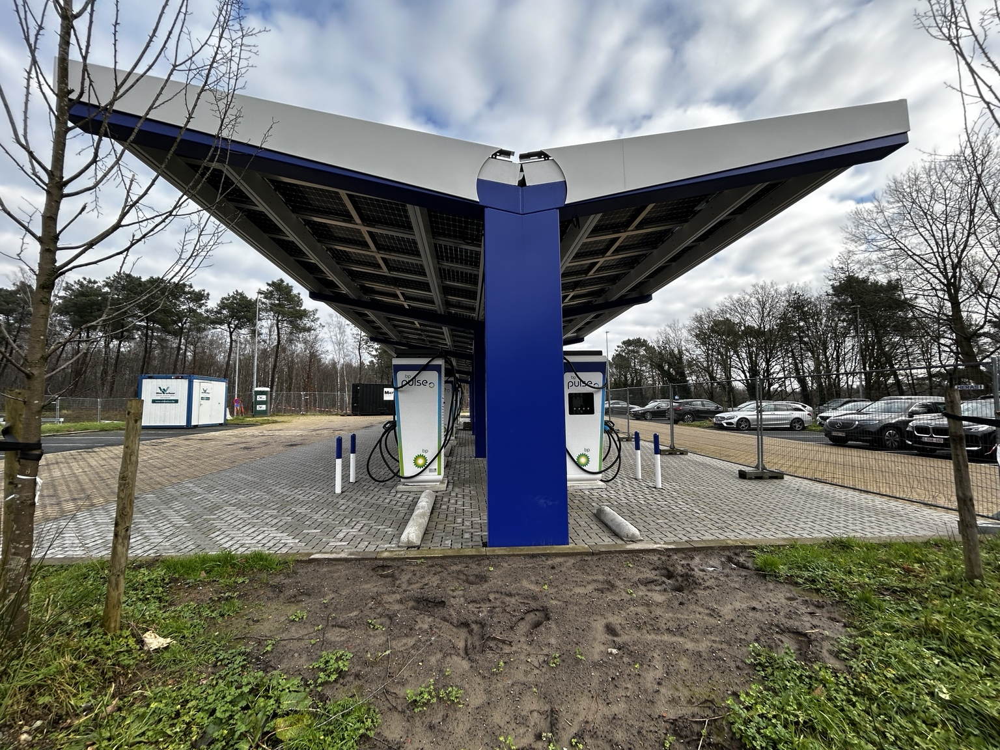
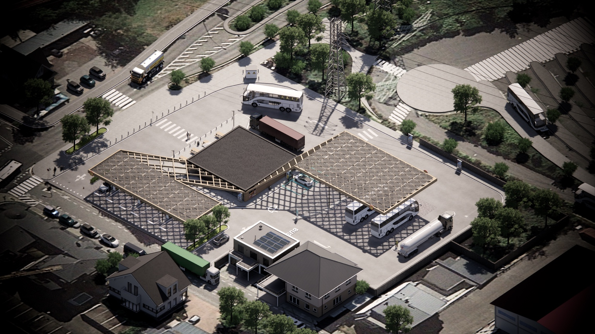
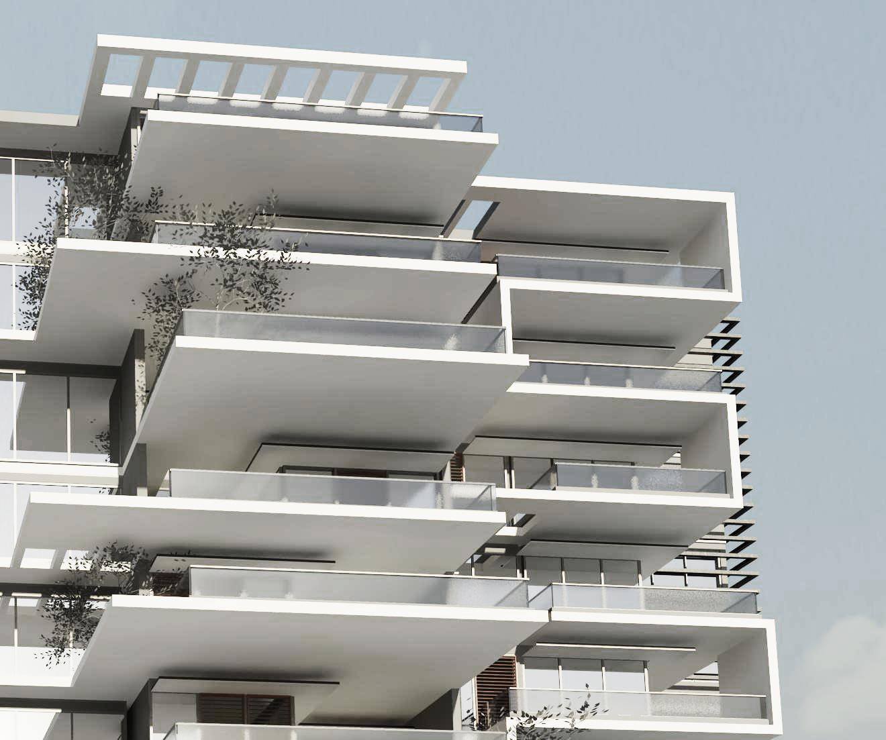
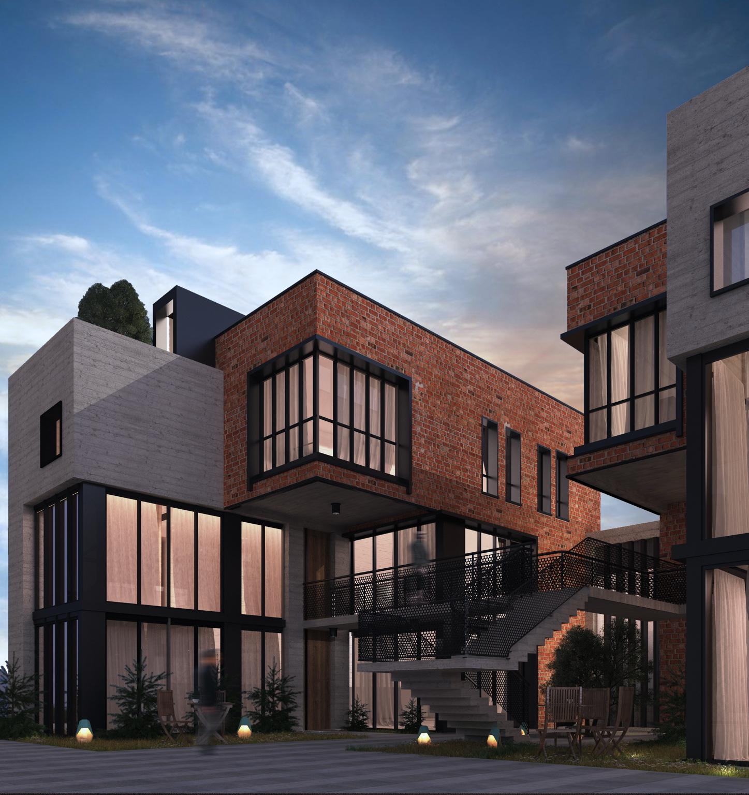
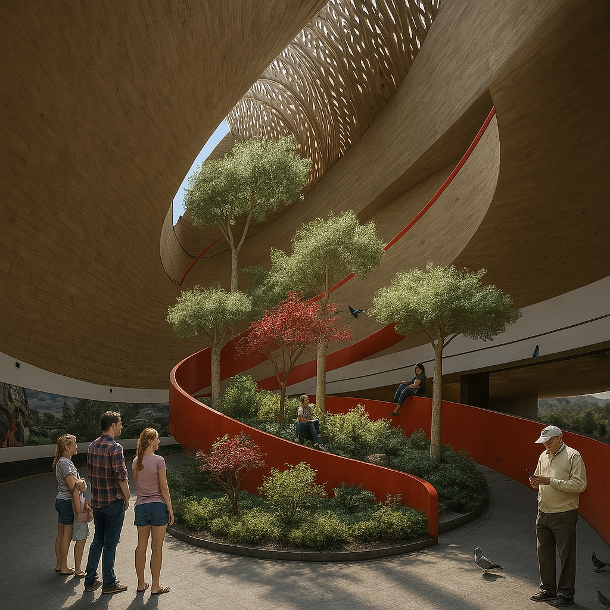
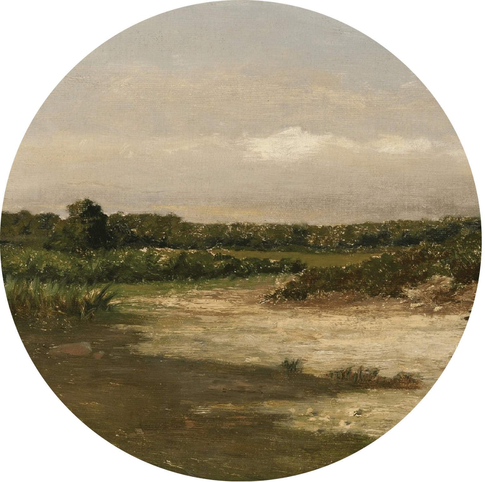
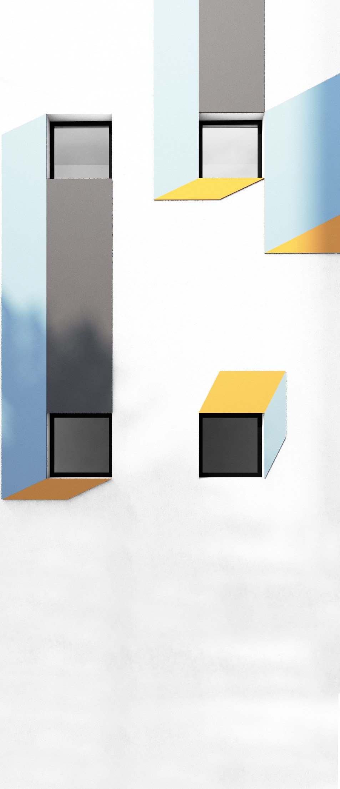
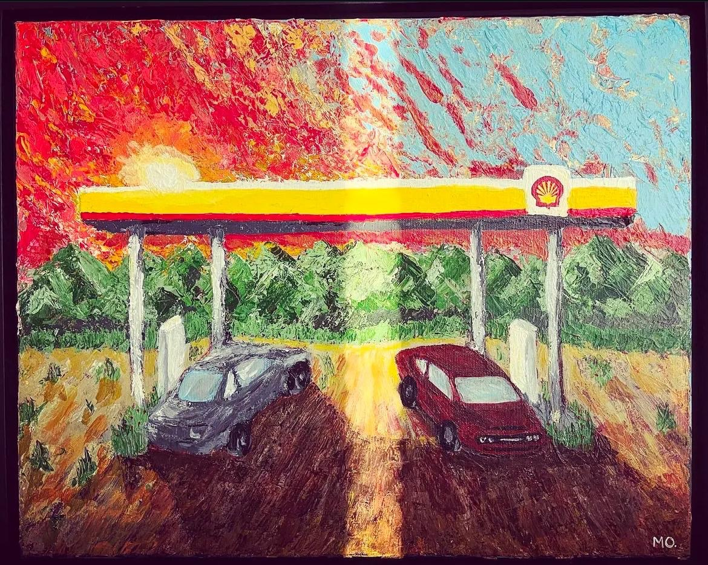
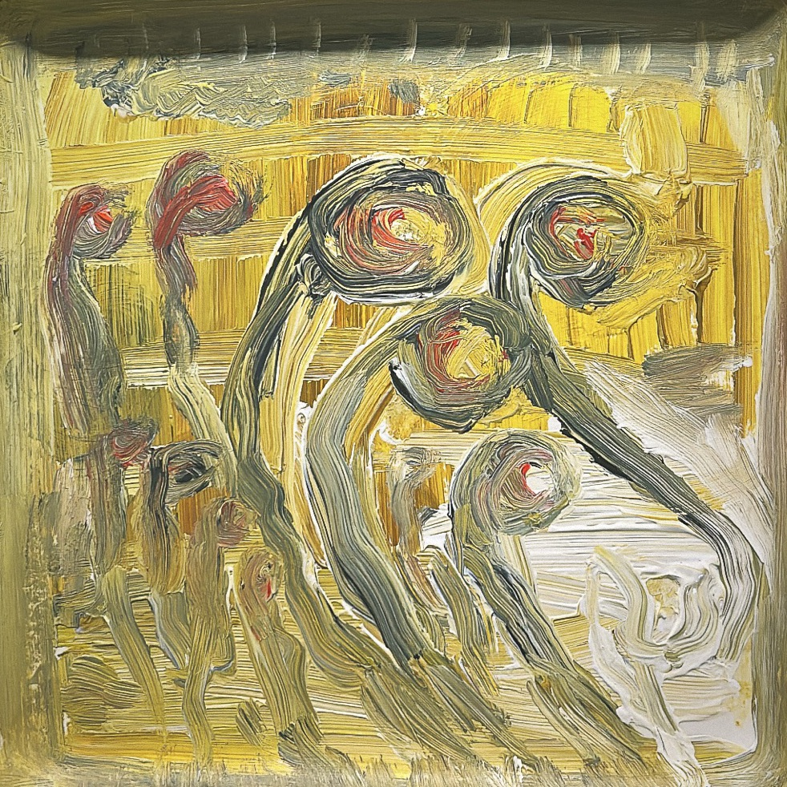

Energy infrastructureEV mobility and multi energy delivery
Energy · Cities · Policy · Visual Thought
A body of work across energy transition, infrastructure delivery, urban transformation, architecture, painting, public policy and social impact.
Working between technical delivery and human meaning, between Europe, MENA, the GCC and Africa.


My work moves between infrastructure and meaning, between cities and people, between technical delivery and public responsibility. I started from architecture and urban design, expanded into energy transition and infrastructure delivery, and now work at the intersection of policy, stakeholder trust, social impact and institutional transformation.
Painting remains a parallel language in this work. It carries the emotional, cultural and spiritual dimensions that professional systems often leave invisible.
The website works as a curated front door. The older WordPress site remains the deeper archive for full portfolios, PDFs, project pages and research notes.
EV charging, LNG, hydrogen ready sites, mobility hubs, grid coordination, HSSE and delivery governance.
Buildings, cities, spatial narratives, adaptive reuse and development portfolios across Europe, MENA, the GCC and Africa.
Quarry governance, agriculture corridors, sustainability, urban resilience and implementation focused research.
Memory, Tripoli, energy, power, identity, social contradiction and material texture.
Safety, dignity, frontline workers, European standards, capacity building and institutional trust.
Energy transition work sits within a longer practice of planning, design, systems thinking and public value. This section remains concise because the website is not a CV. It is a curated world.


Each card opens the original mokabbara.com page. This keeps the new site elegant while preserving the full depth of the old portfolio and research archive.

Residential and urban architectural expression from the early design archive.

Development and spatial composition linked to residential and commercial scale.

Architectural proposal exploring density, materiality and urban living.

Quarry governance, construction culture, environmental damage and circular transition in Lebanon.
Landscape, heritage, ecology and public realm thinking in the Dutch context.

Food resilience, productive landscapes and spatial systems thinking.

Selected project from the architectural and visual development archive.

Urban and architectural thinking connected to South African spatial development.

Housing, community, social structure and Dutch urban living.

Academic practice, studio teaching and design education.
Painting is a parallel language in my work. It carries the emotional, cultural and spiritual dimensions that technical systems often leave invisible, connecting memory, architecture, energy, power, displacement and identity.






LEUSI is a founder initiative focused on HSSE awareness, worker certification, safety leadership and institutional capacity building, connecting European safety standards with frontline realities in Lebanon and future regional contexts.
Visit LEUSIBased in The Hague and working across European and MENA contexts, with a focus on energy transition, infrastructure delivery, public affairs, visual culture and social impact.